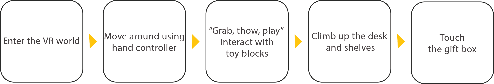
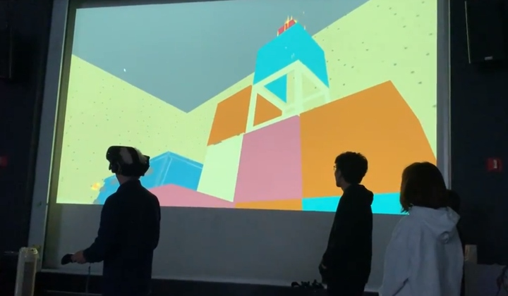
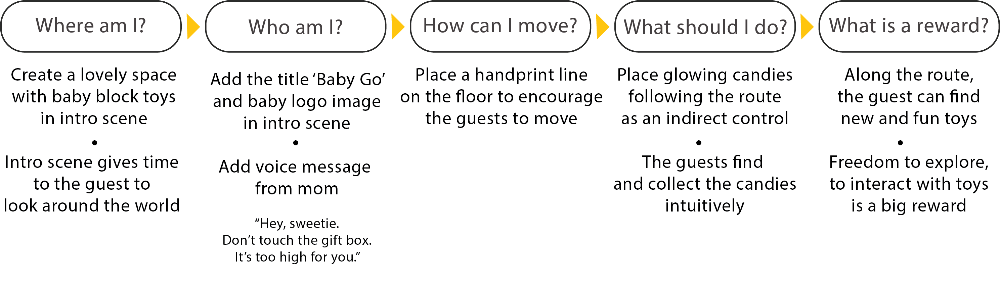
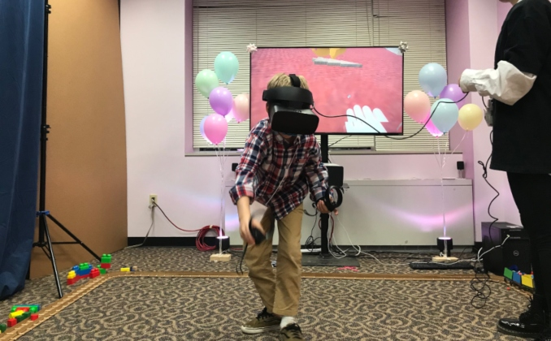

{% for image in page.images %}
 {% endfor %}
{% endfor %}
Baby Go
Interaction Designer, Producer and 3D Artist
Design Overview
‘Baby Go’ is a VR experience built on the HTC Vive to explore a baby’s room filled with fun toys. The objective of this project was to create a consistent, highly interactive and engaging experience that allows naive guests to feel like they have a lot of freedom in the choices they make. In this project, we are not allowed to give instructions to the guest as we are only permitted to use indirect control. Our main goal was making every interaction very natural so that naïve guests can explore the virtual world without any problems.
My Responsibilities
- Led concept development, visual design and interaction design
- Conducted interviews and facilitated usability testing
- 3D modeling and texturing assets using Maya, photoshop, and substance painter
- Hold daily meetings with the project teams to discuss status, problem solve and share development progress
UX Challenges
- The naïve guests had zero knowledge and experience of VR
- First time user education without written/visual instructions
- The intuition of walking in VR
- Movement gap between real world (Standing) and virtual world (Crawling using hands)
Interaction Flow
- The naïve guests need a clue that they are a baby at first in VR.
- Grabbing and throwing blocks, pushing domino, and playing an instrument are very intuitive interactions to naïve guests.
- The guests are satisfied with collecting items
- The guests struggle with climbing using controller

Usability Test
I ran a user test with 15 people that had no knowledge of VR experience.They were asked to play this game without instructions.

The Discovery
Fixing Pain Points

Final Trailer
The impact
This project was invited 2019 BVW Festival and had received positive feedback from guests.

“It was really cool and fun experience!” Elizabeth (female, 19 years old)
“Very clear goal and route!” Wanwen Chen (female, 22 years old)
“It was super fun, I played with every object!” Qindong Zhang (Male, 22 years old)
“Everything was easy to understand and fun to play” Mingyao Ji (Male, 22 years old)
“Very clear goal and route!” Wanwen Chen (female, 22 years old)
“It was super fun, I played with every object!” Qindong Zhang (Male, 22 years old)
“Everything was easy to understand and fun to play” Mingyao Ji (Male, 22 years old)